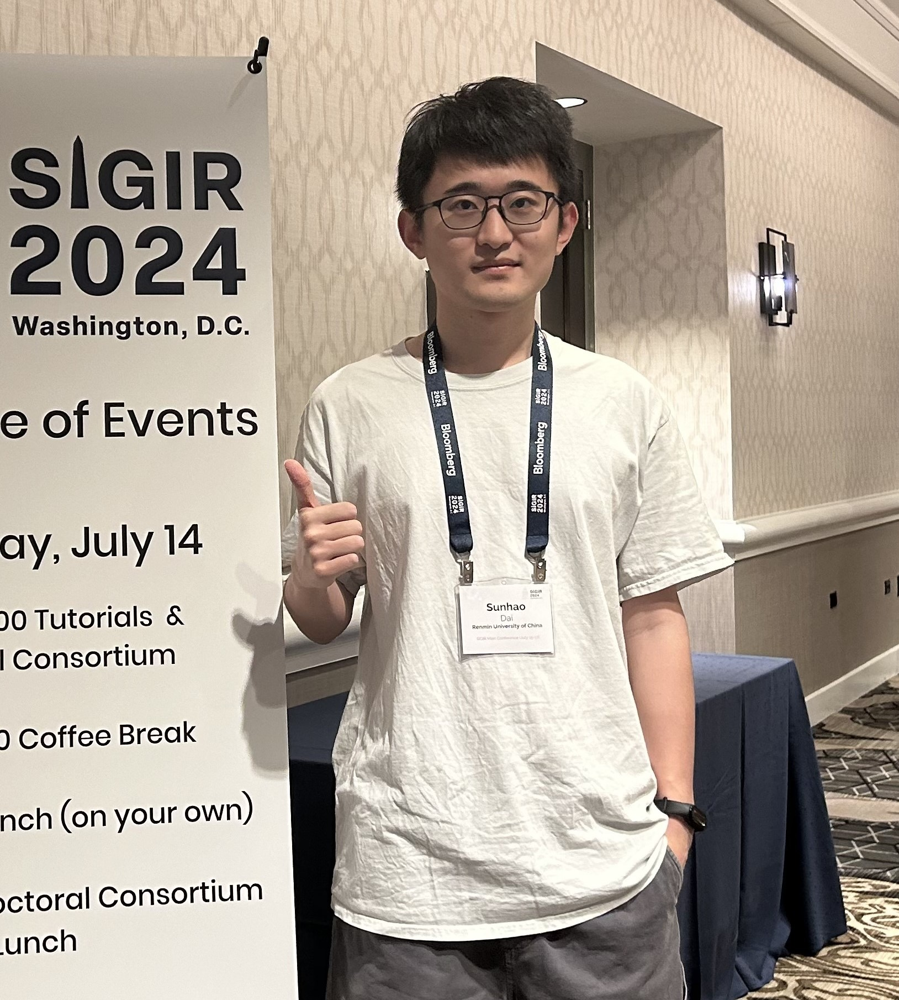

News
24 Nov 2025
I am honored to receive the ByteDance Scholarship 2025 (20 students in China and Singapore)!
19 Sep 2025
One paper about GUI-Agent is accepted by NeurIPS 2025. Congratulations to Yuqi!
21 Aug 2025
Two papers are accepted by EMNLP 2025 (1 Main and 1 Findings), about LLM citation bias and reranking for RAG.
15 May 2025
Two papers are accepted by ACL 2025 (1 Main and 1 Findings), about length collapse in embedding models and LLM citation in legal domain.
14 May 2025
One paper about clustering of neural bandits is accepted by KDD 2025. Congratulations to Zhiyuan (third-year undergraduate) on his first first-author paper!
5 April 2025
Three papers are accepted by SIGIR 2025 (2 Full and 1 Perspectives), about source bias and generative AI search. Congratulations to Yuqi on his first first-author paper!
28 Mar 2025
Check out our new work about reasoning for sequential recommendation, which can potentially lift performance ceilings by 30%-50%.
11 Feb 2023
Our ICLR 2025 paper about LLM tool learning is selected as an Oral presentation (1.8%). Congratulations to Changle!
23 Jan 2023
Two papers are accepted by ICLR 2025, about LLM tool learning and perplexity trap in PLM-based retrieval. Congratulations to Haoyu on his first first-author paper!
23 Jan 2025
One paper about synthetic data generation with LLMs is accepted by WWW 2025 Industry Track.
10 Dec 2024
One paper about online to batch conversion for out-of-distribution generalization is accepted by AAAI 2025.
25 Sep 2024
One survey about tool learning with LLMs is accepted by Frontiers of Computer Science.
16 July 2024
Two papers are accepted by CIKM 2024, about tool retrieval and user satisfaction-oriented recommender systems. Congratulations to Changle and Kepu on their first first-author paper!
15 July 2024
Our short paper on repeated consumption modeling is honored as a Best Short Paper Nominee at SIGIR 2024. Thanks to all co-authors.
25 May 2025
One tutorial about bias and unfairness in information retrieval systems is accepted by KDD 2024.
17 May 2024
Three papers are accepted by KDD 2024, about source bias, reciprocal recommender systems, and robust graph recommendation.
16 May 2024
One paper about retrieval benchmark with LLM-generated documents is accepted by Findings of ACL 2024.
26 Mar 2024
Two papers are accepted by SIGIR 2024, one full paper about user-oriented exploration and one short paper on repeat consumption modeling.
8 Dec 2023
One paper about user attention modeling in music recommendation is accepted by ICDE 2024.
5 Aug 2023
One paper about delay feedback in CVR prediction is accepted by CIKM 2023.
22 July 2023
One paper about LLM for recommendation is accepted by RecSys 2023 LBR Track.
19 May 2021
One paper about user attention bias in music recommendation is accepted by KDD 2021.
|  |
Sunhao Dai (戴孙浩)
Ph.D. Student
IIR Lab
Renmin University of China, No. 59 Zhongguancun Street, Haidian District, Beijing, China, 100872
Email: sunhaodai [at] ruc.edu.cn
|
I am a fifth-year Ph.D. student at Intelligent Information Retrieval Lab (IIR Lab) from the Gaoling School of Artificial Intelligence (GSAI), Renmin University of China (RUC), supervised by Prof. Jun Xu.
I was also a visiting Ph.D. student at NExT++ Research Centre,
National University of Singapore (NUS), co-advised by Prof. Tat-Seng Chua and Prof. See-Kiong Ng.
I feel grateful to collaborate closely with Prof. Wenjie Wang and Prof. Liang Pang.
My research interests include Information Retrieval, Recommender System, and Large Language Model. My long-term goal is to build a more intelligent and trustworthy information access system. Currently, my primary focuses are on the following topics:
- LLM for IR: Expilicit/Latent Reasoning for Recommendation, Agentic Recommendation;
- LLM Agent: Deep Research Agent, GUI Agent, Tool Using, Agentic RL, Synthetic Data;
- Trustworthy IR: Source bias and other issues in IR ecosystems caused by LLM-generated content.
PS: I am currently on the job market and actively seeking academic or industry opportunities. If you are interested in me, please feel free to contact me.
Education
|
Renmin University of China (RUC) Ph.D. Student in Artificial Intelligence, 2021 – Present, Beijing, China Advisor: Prof. Jun Xu |
|
Beijing Jiaotong University (BJTU) B.Eng. in Computer Science and Technology, 2017 – 2021, Beijing, China Advisor: Prof. Jitao Sang |
Experiences
|
NExT++ Research Centre,
National University of Singapore (NUS) Visiting Ph.D. Student, Oct 2024 – Sep 2025, Singapore Advisors: Prof. Tat-Seng Chua and Prof. See-Kiong Ng Mentor: Prof. Wenjie Wang |
Surveys and Tutorials
|
Bias and Unfairness in Information Retrieval Systems: New Challenges in the LLM Era
Sunhao Dai, Chen Xu, Shicheng Xu, Liang Pang, Jun Xu, Zhenhua Dong KDD 2024, WSDM 2025, SIGIR-AP 2025 Website Survey Slides |
|
Tool Learning with Large Language Models: A Survey
Changle Qu, Sunhao Dai, Xiaochi Wei, Hengyi Cai, Shuaiqiang Wang, Dawei Yin, Jun Xu, Ji-Rong Wen Frontiers of Computer Science (FCS) Survey |
|
Large Language Model Sourcing: A Survey
Liang Pang, Kangxi Wu, Sunhao Dai, Zihao Wei, Zenghao Duan, Jia Gu, Xiang Li, Zhiyi Yin, Jun Xu, Huawei Shen, Xueqi Cheng Survey |
Preprints
|
Think Before Recommend: Unleashing the Latent Reasoning Power for Sequential Recommendation
Jiakai Tang#, Sunhao Dai#, Teng Shi, Jun Xu, Xu Chen, Wen Chen, Jian Wu, Yuning Jiang # Equal Contribution |
|
OnePiece: Bringing Context Engineering and Reasoning to Industrial Cascade Ranking System
Sunhao Dai#, Jiakai Tang#, Jiahua Wu, Kun Wang, Yuxuan Zhu, Bingjun Chen, Bangyang Hong, Yu Zhao, Cong Fu, Kangle Wu, Yabo Ni, Anxiang Zeng, Wenjie Wang, Xu Chen, Jun Xu, See-Kiong Ng # Equal Contribution (Fully Applied in Shopee) |
|
RecGPT Technical Report
Chao Yi#, Dian Chen#, Gaoyang Guo#, Jiakai Tang#, Jian Wu#, Jing Yu#, Mao Zhang#, Sunhao Dai#, Wen Chen#, Wenjun Yang#, Yuning Jiang#, Zhujin Gao#, Bo Zheng, Chi Li, Dimin Wang, Dixuan Wang, Fan Li, Fan Zhang, Haibin Chen, Haozhuang Liu, Jialin Zhu, Jiamang Wang, Jiawei Wu, Jin Cui, Ju Huang, Kai Zhang, Kan Liu, Lang Tian, Liang Rao, Longbin Li, Lulu Zhao, Na He, Peiyang Wang, Qiqi Huang, Tao Luo, Wenbo Su, Xiaoxiao He, Xin Tong, Xu Chen, Xunke Xi, Yang Li, Yaxuan Wu, Yeqiu Yang, Yi Hu, Yinnan Song, Yuchen Li, Yujie Luo, Yujin Yuan, Yuliang Yan, Zhengyang Wang, Zhibo Xiao, Zhixin Ma, Zile Zhou, Ziqi Zhang # Core Contributors (Fully Applied in Taobao) |
|
KuaiLive: A Real-time Interactive Dataset for Live Streaming Recommendation
Changle Qu, Sunhao Dai, Ke Guo, Liqin Zhao, Yanan Niu, Xiao Zhang, Jun Xu (First Publicly Available Live Streaming Dataset) |
|
Information Gain-based Policy Optimization: A Simple and Effective Approach for Multi-Turn LLM Agents
Guoqing Wang#, Sunhao Dai#, Guangze Ye#, Zeyu Gan, Wei Yao, Yong Deng, Xiaofeng Wu, Zhenzhe Ying # Equal Contribution (Intrinsic Turn-level Rewards for Multi-Turn Agent) |
Selected Publications
In the Year of 2025:
|
GUI-G1: Understanding R1-Zero-Like Training for Visual Grounding in GUI Agents
Yuqi Zhou, Sunhao Dai, Shuai Wang, Kaiwen Zhou, Qinglin Jia, Jun Xu NeurIPS 2025 (Full, Accepted Rate: 24.5%) |
|
Uplift-RAG: Uplift-Driven Knowledge Preference Alignment for Retrieval-Augmented Generation
Changle Qu, Sunhao Dai, Hengyi Cai, Yiyang Cheng, Jun Xu, Shuaiqiang Wang, Dawei Yin EMNLP 2025 (Findings) |
|
Media Source Matters More Than Content: Unveiling Political Bias in LLM-Generated Citations
Sunhao Dai, Zhanshuo Cao, Wenjie Wang, Liang Pang, Jun Xu, See-Kiong Ng, Tat-Seng Chua EMNLP 2025 (Full, Accepted Rate: 22.2%) |
|
Length-Induced Embedding Collapse in PLM-based Models
Yuqi Zhou, Sunhao Dai, Zhanshuo Cao, Xiao Zhang, Jun Xu ACL 2025 (Full, Accepted Rate: 20.3%) |
|
CitaLaw: Enhancing LLM with Citations in Legal Domain
Kepu Zhang, Weijie Yu, Sunhao Dai, Jun Xu ACL 2025 (Findings) |
|
Revisiting Clustering of Neural Bandits: Selective Reinitialization for Mitigating Loss of Plasticity
Zhiyuan Su, Sunhao Dai, Xiao Zhang KDD 2025 (Full, Accepted Rate: 18.4%) |
|
NExT-Search: Rebuilding User Feedback Ecosystem for Generative AI Search
Sunhao Dai, Wenjie Wang, Liang Pang, Jun Xu, See-Kiong Ng, Ji-Rong Wen, Tat-Seng Chua SIGIR 2025 (Perspectives, Accepted Rate: 23.8%) |
|
Mitigating Source Bias with LLM Alignment
Sunhao Dai, Yuqi Zhou, Liang Pang, Zhuoyang Li, Zhaocheng Du, Gang Wang, Jun Xu SIGIR 2025 (Full, Accepted Rate: 21.5%) |
|
Exploring the Escalation of Source Bias in User, Data, and Recommender System Feedback Loop
Yuqi Zhou, Sunhao Dai, Liang Pang, Gang Wang, Zhenhua Dong, Jun Xu, Ji-Rong Wen SIGIR 2025 (Full, Accepted Rate: 21.5%) |
|
Perplexity Trap: PLM-Based Retrievers Overrate Low-Perplexity Documents
Haoyu Wang#, Sunhao Dai#, Haiyuan Zhao, Liang Pang, Xiao Zhang, Gang Wang, Zhenhua Dong, Jun Xu, Ji-Rong Wen ICLR 2025 (Full, Accepted Rate: 32.1%) # Equal Contribution |
|
From Exploration to Mastery: Enabling LLMs to Master Tools via Self-Driven Interactions
Changle Qu, Sunhao Dai, Xiaochi Wei, Hengyi Cai, Shuaiqiang Wang, Dawei Yin, Jun Xu, Ji-Rong Wen ICLR 2025 (Full, Accepted Rate: 32.1%) (Oral, 1.8%) |
|
Few-shot LLM Synthetic Data with Distribution Matching
Jiyuan Ren, Zhaocheng Du, Zhihao Wen, Qinglin Jia, Sunhao Dai, Chuhan Wu, Zhenhua Dong WWW 2025 (Industry Track, Accepted Rate: 22.4%) |
|
AdaO2B: Adaptive Online-to-Batch Conversion for Out-of-Distribution Generalization
Xiao Zhang, Sunhao Dai, Jun Xu, Yong Liu, Zhenhua Dong AAAI 2025 (Full, Accepted Rate: 23.4%) |
In the Year of 2024:
|
Towards Completeness-Oriented Tool Retrieval for Large Language Models
Changle Qu, Sunhao Dai, Xiaochi Wei, Hengyi Cai, Shuaiqiang Wang, Dawei Yin, Jun Xu, Ji-Rong Wen CIKM 2024 (Full, Accepted Rate: 22.7%) |
|
SAQRec: Aligning Recommender Systems to User Satisfaction via Questionnaire Feedback
Kepu Zhang, Teng Shi, Sunhao Dai, Xiao Zhang, Yinfeng Li, Jing Lu, Xiaoxue Zang, Yang Song, Jun Xu CIKM 2024 (Full, Accepted Rate: 22.7%) |
|
Neural Retrievers are Biased Towards LLM-Generated Content
Sunhao Dai, Yuqi Zhou, Liang Pang, Weihao Liu, Xiaolin Hu, Yong Liu, Xiao Zhang, Gang Wang, Jun Xu KDD 2024 (Full, Accepted Rate: 20.1%) |
|
Towards Robust Recommendation via Decision Boundary-Aware Graph Contrastive Learning
Jiakai Tang, Sunhao Dai, Zexu Sun, Xu Chen, Jun Xu, Wenhui Yu, Lantao Hu, Peng Jiang, Han Li KDD 2024 (Full, Accepted Rate: 20.1%) |
|
Revisiting Reciprocal Recommender Systems: Metrics, Formulation, and Method
Chen Yang, Sunhao Dai, Yupeng Hou, Xin Zhao, Jun Xu, Yang Song, Hengshu Zhu KDD 2024 (Full, Accepted Rate: 20.1%) |
|
Cocktail: A Comprehensive Information Retrieval Benchmark with LLM-Generated Documents Integration
Sunhao Dai, Weihao Liu, Yuqi Zhou, Liang Pang, Rongju Ruan, Gang Wang, Zhenhua Dong, Jun Xu, Ji-Rong Wen ACL 2024 (Findings) |
|
|
Reinforcing Long-Term Performance in Recommender Systems with User-Oriented Exploration Policy
Changshuo Zhang, Sirui Chen, Xiao Zhang, Sunhao Dai, Weijie Yu, Jun Xu SIGIR 2024 (Full, Accepted Rate: 20.2%) |
|
ReCODE: Modeling Repeat Consumption with Neural ODE
Sunhao Dai, Changle Qu, Sirui Chen, Xiao Zhang, Jun Xu SIGIR 2024 (Short, Accepted Rate: 24.0%) (Best Short Paper Nominee) |
|
Modeling User Attention in Music Recommendation
Sunhao Dai, Ninglu Shao, Jieming Zhu, Xiao Zhang, Zhenhua Dong, Jun Xu, Quanyu Dai, Ji-Rong Wen ICDE 2024 (Full, Accepted Rate: 22.8%) |
In the Year of 2023:
|
Dually Enhanced Delayed Feedback Modeling for Streaming Conversion Rate Prediction
Sunhao Dai, Yuqi Zhou, Jun Xu, Ji-Rong Wen CIKM 2023 (Full, Accepted Rate: 24.0%) |
|
Uncovering ChatGPT's Capabilities in Recommender Systems
Sunhao Dai#, Ninglu Shao#, Haiyuan Zhao#, Weijie Yu, Zihua Si, Chen Xu, Zhongxiang Sun, Xiao Zhang, Jun Xu RecSys 2023 (LBR Track) # Equal Contribution (Top-2 Most Cited in RecSys 2023, 2/195) |
In the Year of 2022:
|
Counteracting User Attention Bias in Music Streaming Recommendation via Reward Modification
Xiao Zhang#, Sunhao Dai#, Jun Xu, Zhenhua Dong, Quanyu Dai, Ji-Rong Wen KDD 2022 (Full, Accepted Rate: 15.0%) # Equal Contribution |
Selected Honors
|
ByteDance Scholarship (20 Students in China and Singapore), 2025 |
|
Global Top 20 of Baidu Scholarship, 2024 |
|
National Scholarship (博士生国家奖学金), 2024, 2025 - Ministry of Education of the People's Republic of China (Two consecutive years) |
|
KDD 2024 Student Travel Award, 2024 |
|
Best Short Paper Nominee at SIGIR 2024, 2024 |
|
Outstanding Reviewer, NeurIPS 2022 Dataset & Benchmark Track, 2022 |
|
Outstanding Graduation Thesis of Beijing (北京市优秀毕业论文), 2021 - Beijing Municipal Education Commission |
|
Outstanding Graduate of Beijing (北京市优秀毕业生), 2021 - Beijing Municipal Education Commission |
|
Zhaokun Scholarship (照坤奖学金), 2021 - Beijing Jiaotong University (14 students) |
|
Zhixing Scholarship (知行奖学金), 2020 - Beijing Jiaotong University (Highest honor in BJTU, 10 students) |
|
National Scholarship (本科生国家奖学金), 2018, 2019, 2020 - Ministry of Education of the People's Republic of China (Three consecutive years) |
Invited Talks
|
Latent Reasoning for Recommendation
- Kuaishou, Beijing, Oct 2025 |
|
Source Bias: A New Challenge When Generative AI Meets Information Retrieval
- YSSNLP, Dalian, June 2025 |
|
Source Bias: A New Challenge When Generative AI Meets Information Retrieval
- University of Chinese Academy of Sciences (UCAS), Beijing, Mar 2025 |
|
Source Bias in Information Retrieval: A New Challenge in the Generative AI Era
- Institute of Computing Technology (ICT), Chinese Academy of Sciences (CAS), Beijing, Sep 2024 |
|
Source Bias in Information Retrieval: A New Challenge in the Generative AI Era
- Microsoft Research Asia (MSRA), Beijing, Aug 2024 |
|
Neural Retrievers are Biased Towards LLM-Generated Content
- MLNLP Community, Mar 2024 |
|
Neural Retrievers are Biased Towards LLM-Generated Content
- CCIR 1st PhD Student Workshop, Beijing, Mar 2024 |
|
Responsible Information Retrieval
- AI.EDU Research Lab 2.0, Nov 2023 |
|
Large Language Models for Recommender Systems: A Preliminary Study
- Kuaishou, Beijing, May 2023 |
Services
|
Invited Reviewer for Journals: Nature Humanities and Social Sciences Communications IEEE Transactions on Knowledge and Data Engineering (TKDE) ACM Transactions on Information Systems (TOIS) Transactions on Intelligent Systems and Technology (TIST) |
|
Program Committee Member / Reviewer for Conferences: NeurIPS: 2022–2025 ICML: 2025 ICLR: 2025-2026 KDD: 2024–2025 SIGIR: 2025 WWW: 2025-2026 ACL ARR: 2025-2026 AAAI: 2026 CIKM: 2024–2025 |
Teaching Assistants
|
Intelligent Information Retrieval 2022 Fall & 2023 Fall, Renmin University of China |

Last update: Nov, 2025. Webpage template borrows from Prof. Xiangnan He.